收起非当前任务的入口
保留路线详情、定位讲解、客服和重新定位等操作，减少导航中的信息干扰。
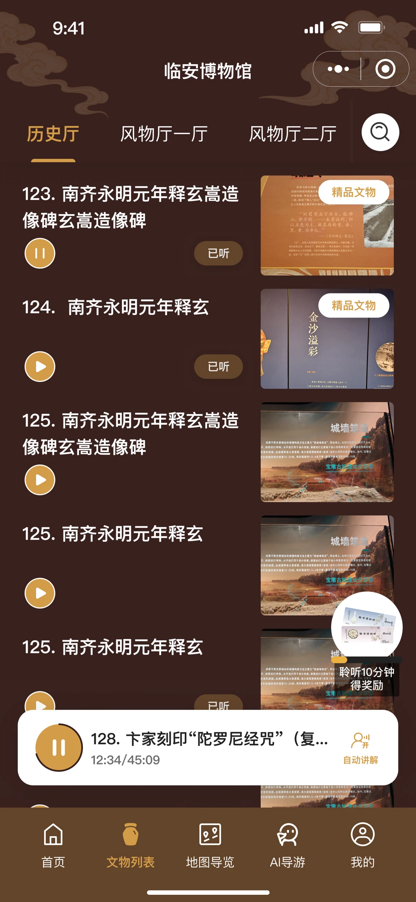
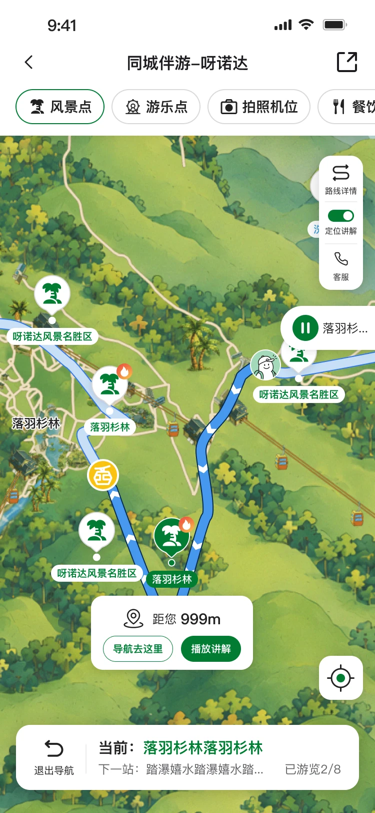
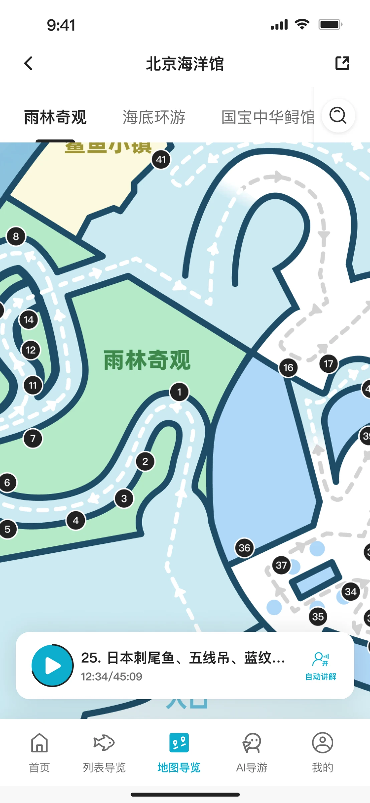
交互设计 · UI 设计
部分产品逻辑梳理
产品 · 研发 · 运营 · 设计
协作推进上线与迭代
2025.07 至今
已上线，持续迭代
室内 / 室外两套设计逻辑
可复用设计组件与规范
部分合作景区缺少线上导览能力。基于已上线的恭王府产品，我负责体验重构，并逐步建立适应大型室外景区与室内场馆的交互和 UI 方案。随着接入范围扩大，设计还需要兼顾不同景区的内容与主题。
功能查找费力；听故事时看不到导航；路线指引缺少更明确的方向与距离信息。
围绕路线组织信息，进入导航后聚焦当前点位、下一站与游览进度。
01 / OUTDOOR EXPERIENCE
从恭王府拓展到呀诺达、肇庆星湖等大型景区后，方向与位置变得更重要。我参与梳理导航状态的信息优先级，让游客在游览中持续看到当前任务。
呀诺达游客大多按套票游玩。相比让用户自己从路线列表中匹配，我提出识别套票名称、推荐对应既有路线，同时保留手动选择。
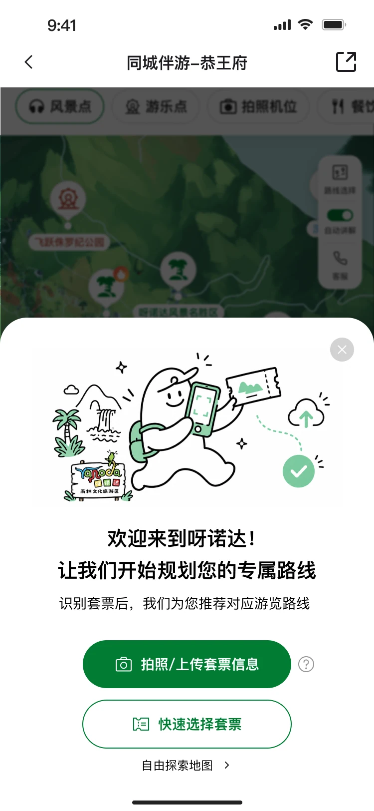
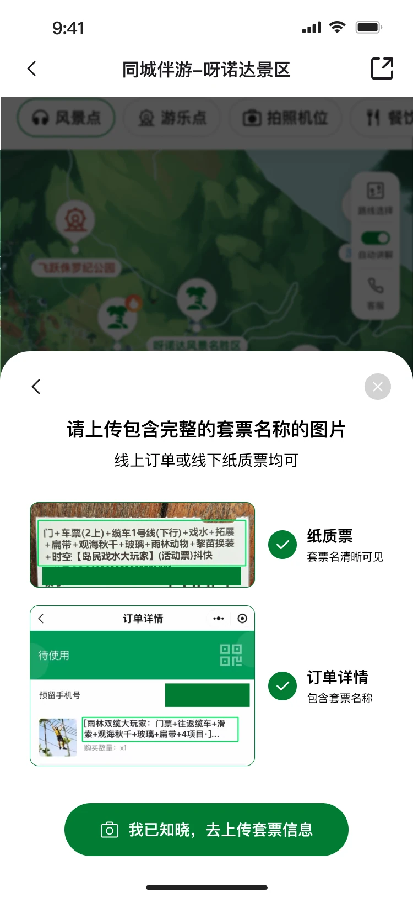
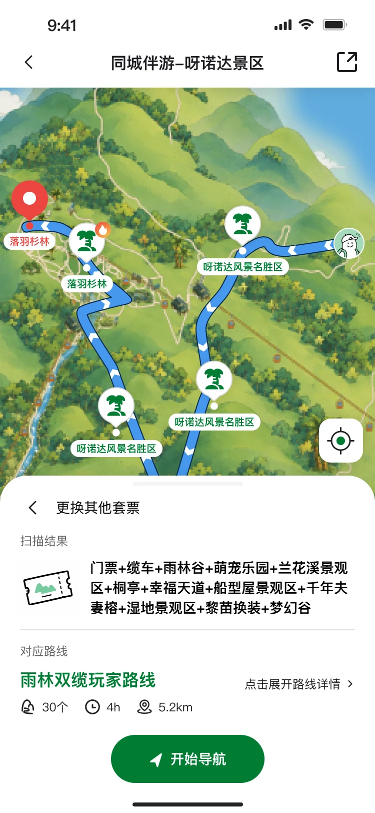
上传前增加纸质票与订单截图示例，帮助用户提供清晰、完整的套票名称。识别失败时可重新上传。
上线后一周相比十一期间下降 3.8%；相对降幅与百分点口径待核实，仍需持续观察。我提出在底部卡片中展示路线进度。讨论中也考虑过剩余时间，但游客的排队、停留与游玩时长差异很大，最终采用按经过点位计算的进度。
表达已完成的点位数量，
不把它换算成不准确的剩余时间。
底部持续显示当前点位、下一点位和游览进度。悬浮播放器让讲解与地图共存。
人文景区保留故事讲解，并支持连续自动播放；缺少人文故事的大型户外景区取消这一模块。
DESIGN STARTS IN THE FIELD
室内方案启动后，我到海昏侯博物馆实地游览，观察展馆环境与展陈方式，并根据游览路线和展品位置绘制室内导览地图。现场调研为后续展品查找与地图导览设计提供了具体的空间依据。
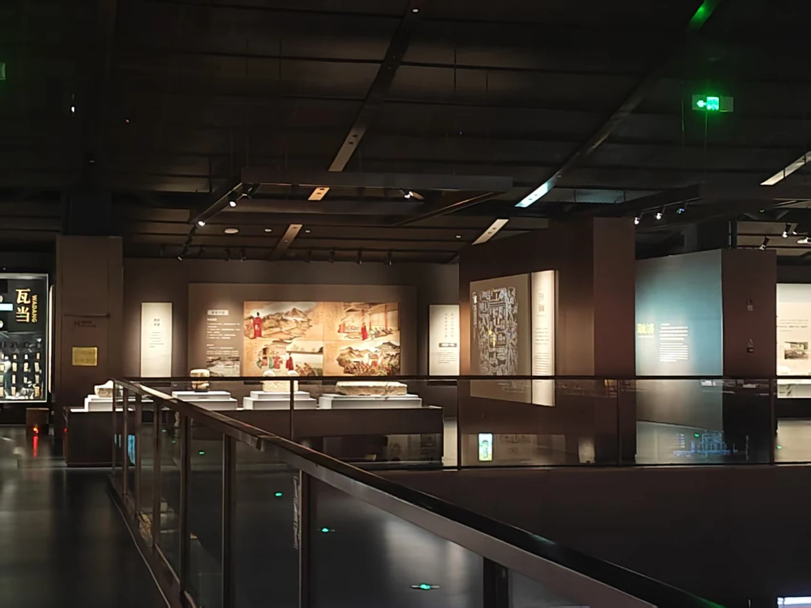
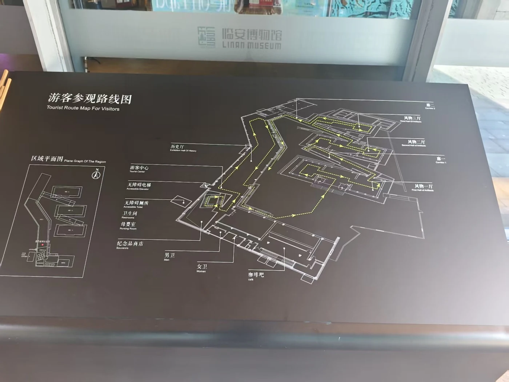
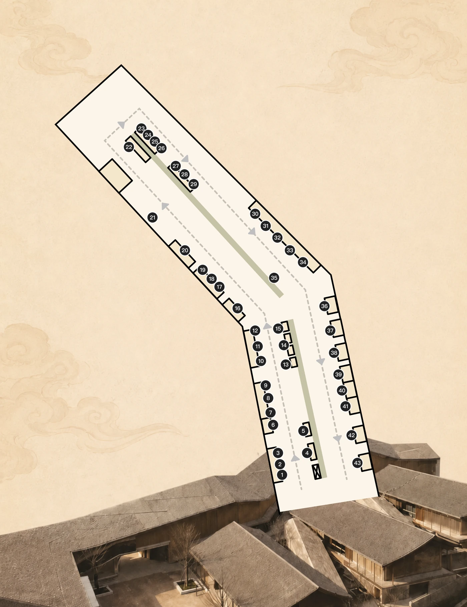
展示所提供的项目调研与地图素材，未将照片标注为特定场馆。
02 / INDOOR EXPERIENCE
室内游客更关心展品的历史、细节和背后的故事。现场没有与产品对应的编号，游客主要通过名称和照片辨认展品；名称模糊搜索是核心查找方式。
承接购票信息、智能问答等需求。
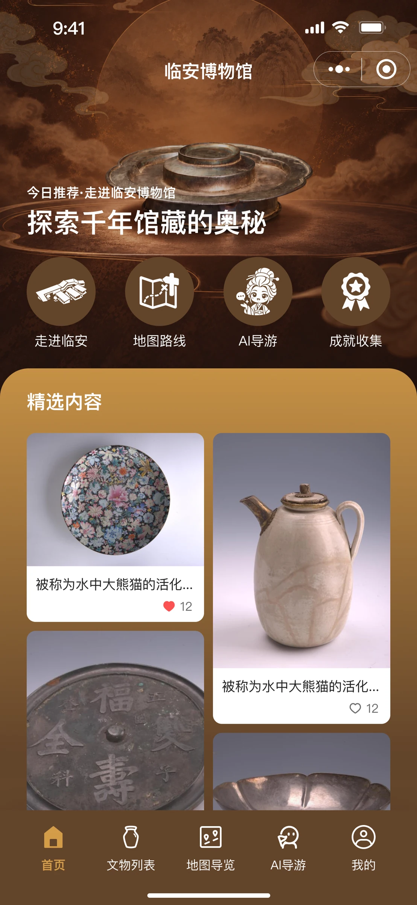
从展陈位置出发查找讲解内容。
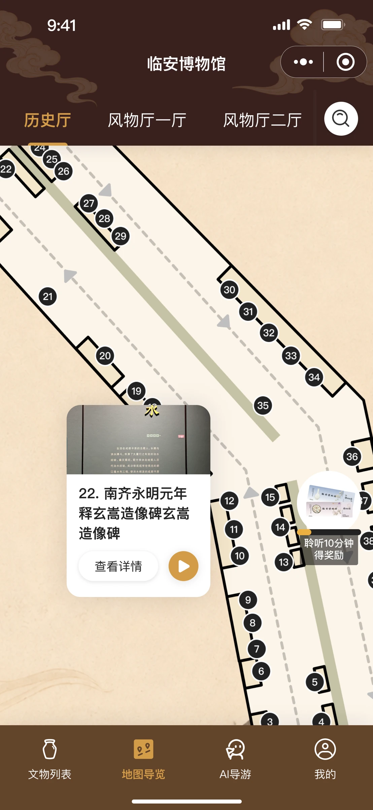
搜索后查看对应位置时，自动切换展厅、移动并高亮展品。自动讲解按展品顺序播放，用户可以随时从地图或列表切换内容。
地图编号用于产品内对应，位置高亮并非实时室内定位。
1.0 到 2.0 主要是视觉升级。实际用户反馈进入页面后不知道该做什么，底部列表还需要上滑才能发现。3.0 因此拆开地图与列表入口，继续保留两者的位置关联。
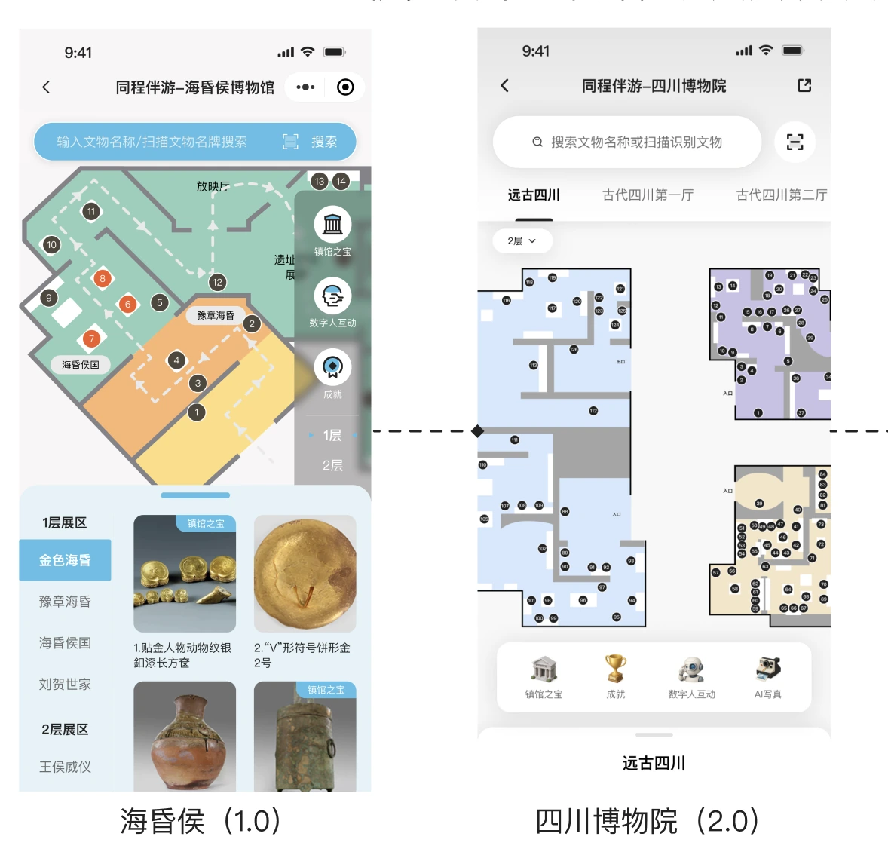
1.0 同时呈现地图与列表，地图区域受限。2.0 参考爱彼迎搜索结果页的地图与列表关系，更新视觉与层级，但列表仍藏在底部。
需要发现上滑列表的操作后，用户才能进一步理解列表与地图的联动。
游客可以通过文字或语音提问，部分景区支持图片识别。我负责输入与回答等待过程的交互规则，通过 AI 导游动画和“正在思考中”提示反馈处理状态。
文字与语音输入，承接游览中的问题。
导游动画与思考提示表达正在回答。
回答留在对话中，支持继续交流。
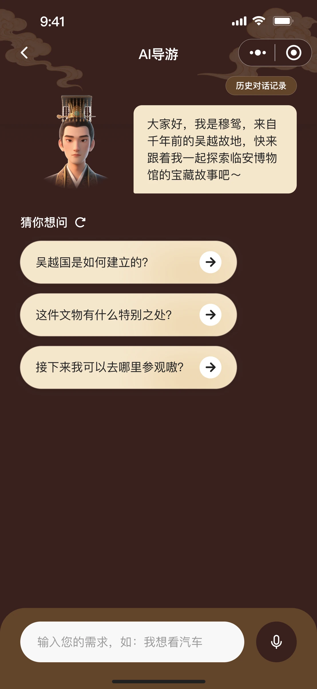
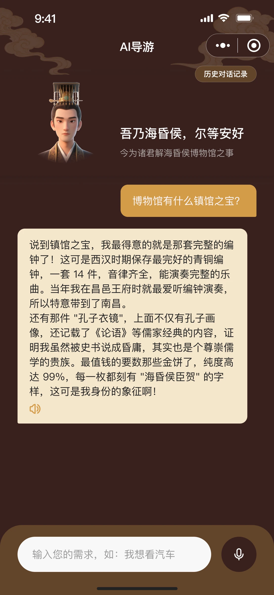
当前通过静态界面展示交互设计，未模拟实际问答与等待动画。
03 / DESIGN AT SCALE
临安博物馆与海洋馆共用室内导览结构。根据场馆主题调整颜色、装饰纹样与主页图标，展厅和展品内容由运营配置，地图则根据实际场馆重新绘制。
展品查找、列表与地图入口、播放逻辑。
主题色、装饰纹样、主页图标与场馆地图。
将基础样式、业务组件、页面模板和交互状态整理在设计文件中，作为后续景区接入与设计交付的基础。
颜色 / 字体 / 图标 / 按钮
播放器 / 展品列表 / 地图点位 / 搜索
模板 / 加载 / 异常 / 交互规则
项目已交付室内外两套导览逻辑，以及支持多景区适配的设计组件与规范。
包含 5 个室内场馆，
10+ 国家 5A / 4A 景区。
资料齐备后的接入周期。无需定制时，运营一天可接入多个景区。
需要定制时的设计与开发投入，来自项目记录与团队估算。
接入周期与定制投入采用不同统计口径；效率结果来自项目记录与团队估算。
实地调研让我看到游客如何在看展、行走与操作手机之间切换，也让我重新判断哪些入口和信息需要优先呈现。
下一步探索展签蓝牙定位，改善室内位置与讲解的衔接。这一方向仍在规划中，尚未计入已上线成果。